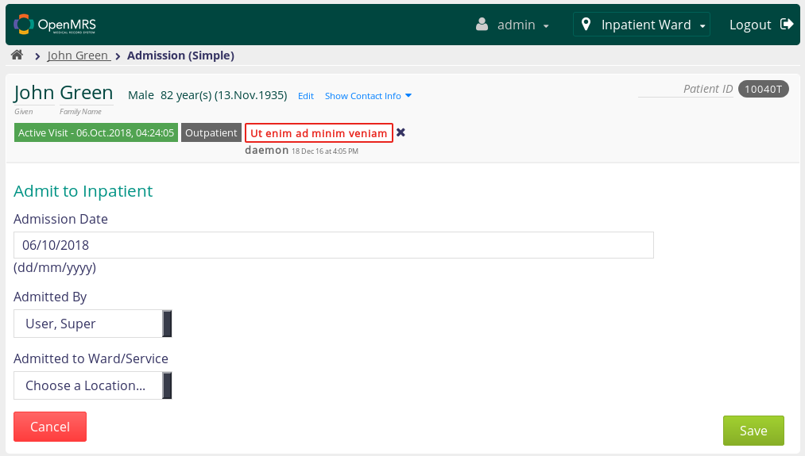
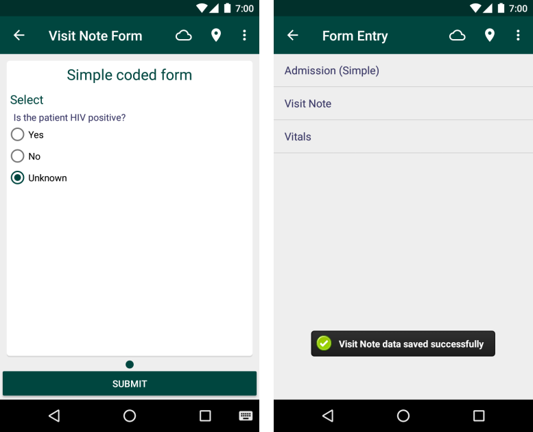
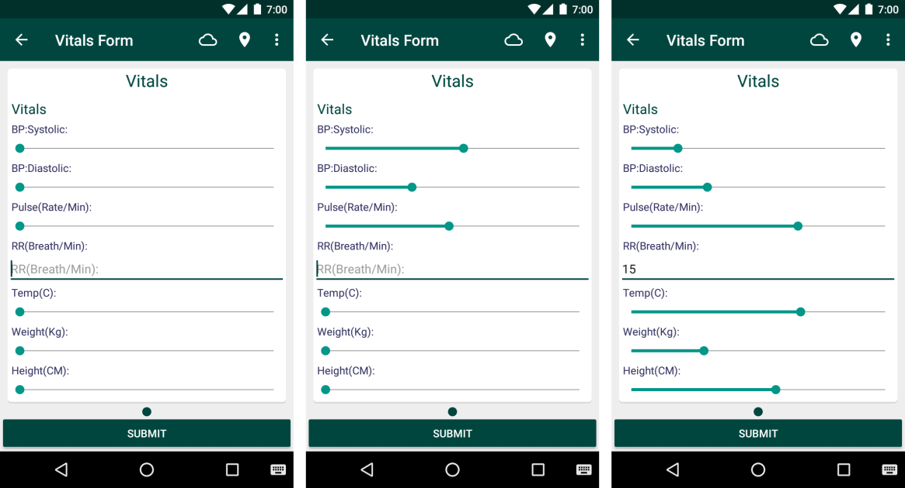
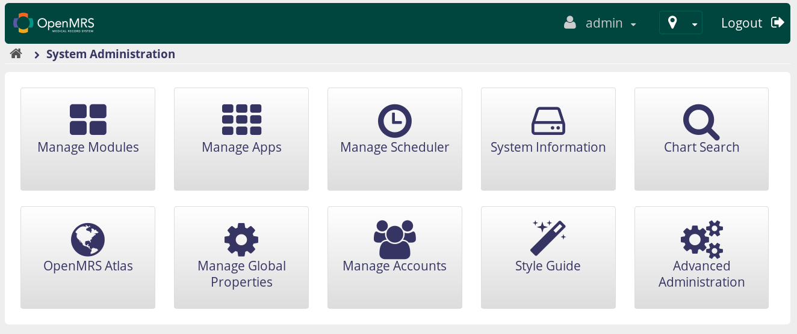
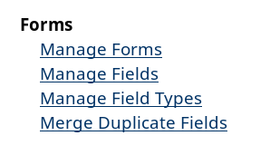
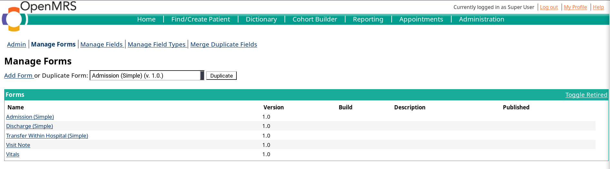
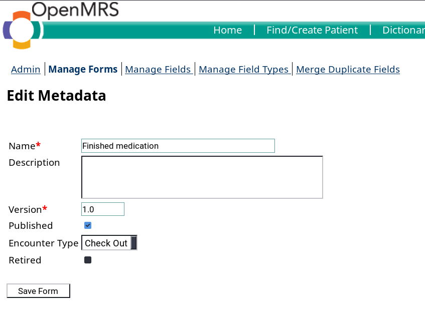

Data Input
OpenMRS's Android app supports a number of types to input data, such as a patient's information or details of the hospital. Providers are able to input data into the OpenMRS system generally by using forms.
Currently, there are 3 pre-made forms to record information regarding a patient. They are Admission forms, Visit Notes and Vital forms.
1. Admission
This form is used when a patient is needed to live in the hospital while under treatment.
Currently, this form is not implemented yet in the mobile client, so inpatients will have to be admitted in the main OpenMRS web application.
 An admission form in the main web app.
2. Visit Note
This form is to capture any information during a patient's visit.

There are short checkpoint sections in this form, as well as a writing space to record other important details that other sections are missing. After completing the form, simply click 'Submit'.
3. Vitals
Providers are also able to capture a patient's biometric information, which may be done through a 'vitals form'.

When recording biometric information, providers are required to record the patient's blood pressure, pulse, breath rate, body temperature, weight and height. Click 'Submit' to save the captured data to the system.
Adding New Forms to the App
There is still a short limit regarding the types of data that can be stored when using the Android client. However, it is possible to input other types of data into the system by creating new forms on the server, which can be done via the OpenMRS web app.
To do this, access your OpenMRS instance from the web application and log in. Next, select System Administration -> Advanced Administration -> Forms -> Manage Forms.



 Creating new forms from the OpenMRS web app.
You may add a new form by clicking the 'Add Form' hyperlink and filling up the name of the form, description and other required fields. Once finished, click Save Form and you should see the newly created form both on the Forms page and finally in the Form Entry section in the Android client.